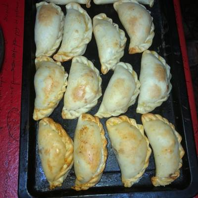
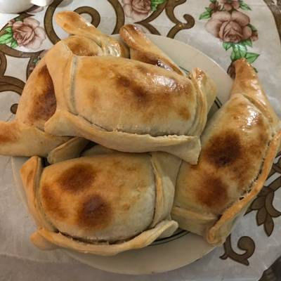

280 g lomo / filete o posta rosada / huachalomo o bistec picado en cubos de medio centímetro
1 cda harina sin polvos de hornear / harina sin preparar
200 ml caldo de carne o agua
Sal y pimienta a gusto
2 huevoos duros
6 aceitunas negras
50g de pasas rubias
Elaboración
Para la masa:
En un bowl, mecla la harina con la sal.
Pon la manteca y agua en una olla o sartén pequeña a fuego medio. Cuando rompa hervor, agregar a la harina.
Agregar también el vino (frío o a temperatura ambiente).
Mezclar primero con una espátula para no quemarte y luego terminar con las manos.
Amasar con fuerza para integrar los ingredientes pero no amasar más de lo necesario
Envolver la masa y refrigerarla por lo menor 1 hora o hasta 2 días.
Agrega el aceite, la cebolla, el comino y el orégano.
Mezcla cada par de minutos, tienes que pasar una muy buena cantidad de tiempo
cocinando la cebolla. Debe oler muy dulce, por lo menos 15 minutos.
Agregar la carne y mezclar por un par de minutos.
Agregar la harina y mezclar. La harina es el truco de mi mami
para que la empanada pueda tener más jugo.
Agrega el caldo o agua y deja que rompa hervor. Desde que hierve, dale un minuto más y retíralo.
Enfría el pino o relleno de carne por completo, idealmente prepáralo de un día para otro. La harina
va a espesar el líquido al enfriarse y hacer que sea fácil rellenar y luego en el horno se vuelve juguito de nuevo.
Puedes dejarlo refrigerado por hasta 4 días antes de rellenar.
Para los huevos duros, ponlos en una olla con agua a temperatura ambiente,
desde que hierve fuertemente el agua, cuenta 8 minutos. Luego transfiere los huevos
a un bowl con hielo para detener la cocción. Pélalos y córtalos en 4.
Divide la masa en 6 porciones iguales. Estíralas lo más redondo que puedas hasta que
tenga 2mm de grosor y luego córtala con un cuchillo usando un plato de 20cm como molde.
Pon aproximadamente 4-5 cucharadas de relleno en el centro pero hacia un lado de la empanada.
Encima pon una aceituna y ¼ de huevo duro.
Pinta ligeramente la mitad del borde de la empanada con el huevo batido con la cucharada de agua y dóblala.
Pega bien ambas mitades con tus dedos. Luego, dobla los alerones de los lados hacia adentro y el alerón frontal
también. Píntala con más del huevo batido con agua. Te debería quedar una empanada rectangular.
Ponla sobre una bandeja con papel de cocina antiadherente y repite el proceso con todas las empanadas.
Si te sobra un poquito de masa de lo que cortaste, puedes unirla nuevamente con manos humedecidas para volver a estirarla.
Hornea las empanadas en un horno precalentado a 200°C/400°F por 20-25 minutos o hasta que estén bien doradas por encima y abajo también.
El 18 de septiembre son las fiestas patrias de Chile y no puedo evitar sentirme contagiada del fervor viviendo en Chile!
Además, un pedazo de mi corazón lo tiene Chile de todas maneras, llevo 9 años viviendo aquí, mi papá es chileno así que no
queda más que celebrar su independencia :). Y si hay algo que para mí no puede faltar en una celebración del 18, son empanadas de carne.
Las empanadas de carne chilenas se rellenan con cebolla, carne y una mezcla de especias.
Este relleno se le llama «pino» y estas en particular son súper jugosas así que se les dice «calduas»,
como caldudas (de caldo) pero con pronunciación mejorada jaja. Es MUY importante en las empanadas de pino cocinar bien la cebolla.
Yo casi nunca puedo comer empanadas que no sean caseras, porque el 30 de septiembre me sigo acordando de las empanadas del 18!
La cebolla mal cocida en enemigo número uno de mi gastritis jajaja. Por eso, sé paciente, que la cebolla se cocine SÚPER bien, que huela bien dulce,
y te prometo que no se te va a repetir.
 
Otro de tantos estilos de empanadas chilenas tradicionales
Nuestro canal en YouTube
Empanada de Pino Chilena. Una expresión cultural gastronómica que todo Chile ama y cuida.
Muchos países tienen su empanada y aquí les presentamos la nuestra. Bella, deliciosa, aromática, inolvidable
y siempre bienvenida. Así es nuestra empanada.